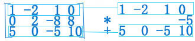

背景:
1949年夏末, 哈佛大学教授Wassily Leontief正在小心地将最后一部分穿孔卡片插入大学的 MarkⅡ计算机.
这些卡片包含了美国经济的信息, 包括美国劳动统计局两年紧张工作所得到的总共25万多条信息.
Leontief 把美国经济分解为500个部门, 例如煤炭工业、汽车工业、交通系统, 等等.
对每个部门, 他写出了一个描述该部门的产出如何分配给其他经济部门的线性方程.
由于当时最大的计算机之一的 MarkⅡ还不能处理所得到的 包含500个未知数的500个方程的方程组, Leontief 只好把问题简化为包含42个未知数的42个方程的方程组.
为解 Leontief 的42个方程, 编写 MarkⅡ计算机程序需要几个月的工作, 他急于知道计算机解这个问题需要多长时间.
MarkⅡ运算了56个小时, 才得到最后的答案.
Leontief 获得了1973年诺贝尔经济学奖, 他打开了经济数学建模的新时代的大门.
1949年在哈佛的工作标志着应用计算机分析大规模数学模型的开始. 从那以后, 许多其他领域中的研究者应用计算机来分析数学模型.
由于所涉及的数据数量庞大, 这些模型通常是线性的, 即它们是用线性方程组描述的.
—<引用linear algebra and its applications--David C.Lay, Steven R.Lay, Judi J.McDonald>
struct 线性方程组 { n个 线性方程 };
1.线性方程
线性方程是形如 的方程
其中x{1} x{2}...x{n}是变量, a{1} a{2}...a{n}是系数, a{n} 与 b 可以是实数或复数
n可以是任意正整数
+x3.jpg) 以上2个方程都是线性方程, 它们可以化简为...(习题1)
以上2个方程都是线性方程, 它们可以化简为...(习题1)
2.线性方程组
线性方程组是由 一个 或 几个 包含同样的x{1},x{2},x{n}的线性方程组成的,
例如:
线性方程组的解是一组数(s{1}, s{2}, s{n}), 用这组数分别代替x{1}, x{2}, x{n}时所有线性方程都 两边相等
方程组的所由可能的解称为方程组的解集
若两个方程组的解集相同, 这2个方程组是等价的
3.线性方程组的解
由一共2个变量的组成的2个线性方程, 组成的线性方程组的 求解, 与求两条二维直线的交点过程是一样的
由一共3个变量的组成的2个线性方程, 组成的线性方程组的 求解, 与求两条三维直线的交点过程是一样的
 这个方程组有唯一解, 并且是 方程1 与方程2 的两条直线的交点
如果两条直线平行, 对应的线性方程组无解
也可能会有很多自变量, 那么线性方程组有无穷个解
线性方程组的解有3种情况
1. 无解
2. 有唯一解
3. 有无穷多解
其中有唯一解, 与有无穷多解, 那样的线性方程组是相容的
线性方程组无解, 那样的线性方程组是不相容的
这个方程组有唯一解, 并且是 方程1 与方程2 的两条直线的交点
如果两条直线平行, 对应的线性方程组无解
也可能会有很多自变量, 那么线性方程组有无穷个解
线性方程组的解有3种情况
1. 无解
2. 有唯一解
3. 有无穷多解
其中有唯一解, 与有无穷多解, 那样的线性方程组是相容的
线性方程组无解, 那样的线性方程组是不相容的
4.线性方程组的矩阵表示
通常会有一组简单的数字阵列来表示线性方程组
将每一个变量的系数写在对齐的一列中
系数矩阵
增广矩阵
矩阵按行和列记作m*n矩阵， m行数, n列数, 上面系数矩3x3矩阵, 增广矩阵3x4矩阵
5.解线性方程组
用方程组中第一个方程中x{1}的项消去其他方程中含x{1}的项, 然后用第二个方程中x{2}的项消去其他方程中含x{2}的项
化简线性方程组的三种基本变换
1. 把某个方程换成它 与 另一方程的倍数的和
2. 交换两个方程的位置
3. 把某一方程的所有项乘以一个非零常数
原方程
步骤
步骤matrix1-21002-8030-50.jpg) 步骤
步骤
步骤
步骤
步骤
步骤
步骤
步骤